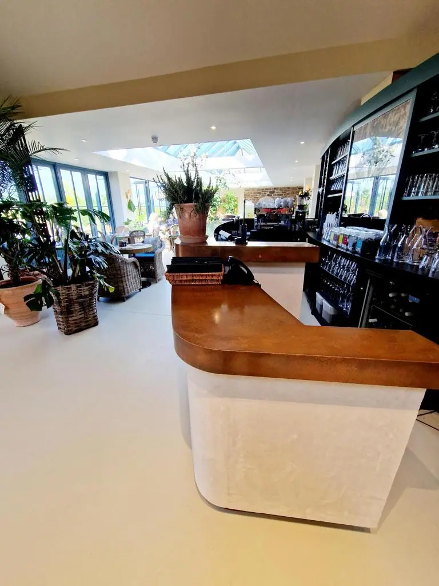

Copper is one of the oldest metals known to man and is still as popular in interior décor as it was a thousand years ago. Part of that is down to the lustrous patina of the metal as well as its flexibility.
Nothing looks quite as good as copper. No modern material has the same warmth, character and appeal as copper that’s for sure!

Cut to size
Each of our bespoke finishes can be purchased in sheets cut to your size, perfect for your project.
- Pricing includes delivery and turnaround time is just 5-8 weeks
- Each piece is coated in a gloss finish lacquer that prevents the sheet from further aging

Ready to go
We can provide bespoke cut metal with each of our finishes being wrapped around wood and lacquer finished. Please get in touch for a bespoke quote .
Copper bar top finishes include:
- Ayrshire finish – Rich, dark and ageless. Three things that sum up this copper bar top finish, complete with verdigris elements throughout.
- Cheshire finish – Aged copper at its best. Warm, lustrous and characterful and ideal for delivering a hearty welcome in any space.
- Hertfordshire finish – Lovely light and dark copper elements with strong verdigris colours throughout. This finish certainly makes a statement!
- Natural copper finish – The real metal at its best. Warm, rich and a little luxurious. There’s nothing quite like natural copper to liven up a space.
- Northumberland finish – Upmarket lighter aged copper finish with finer verdigris elements. Simply beautiful!
- Oxfordshire finish – Rugged, interesting and unique with light, medium and dark tones and a characterful patinated finish.
HANDMADE COPPER BAR TOPS
All copper bar tops are created by hand by our incredibly skilled team of artisans.
Each begins life as a copper sheet and is prepared with the desired finish by hand. Aged copper is artificially aged until it reaches the perfect patina and then the ageing process is halted.
All aged copper bar tops are then sealed in hard wearing lacquer to protect the finish and permanently stop the ageing process.
Natural copper bar tops can also be lacquered for extra protection or left natural.
All sheets can be cut to size and dispatched as copper sheets or fitted to a bar here in our workshop and provided as a complete bar top.
CARING FOR YOUR COPPER BAR TOP
All copper bar tops are designed to offer a long working life with minimal maintenance.
Simply clean regularly with a soft cloth and some warm soapy water. Avoid using abrasives or chemical cleaners as they will accelerate lacquer wear.
All copper bar tops come with full care instructions for your convenience.
Order your handmade copper bar tops today. Contact our sales team for a fast, free quotation!


If you can dream it, we’ll make it.
Bars, balustrades, staircases, worktops, cladding and pieces that don’t have a name yet. Our designers and craftspeople work in brass, copper, zinc and steel, and alongside wood.